| [Top] | [Contents] | [Index] | [ ? ] |
This manual is for MOOSE (version 1.3). It will be undergoing additioins and corrections. Please keep visiting the the MOOSE website to see the latest version.
It contains an overview of how to use the PyMOOSE/PyQT GUI for MOOSE.
This manual is for MOOSE (version 1.3 ), The Multiscale Object-Oriented Simulation Environment.
Copyright © 2010 Subhasis Ray, Upinder Bhalla and National Centre for Biological Sciences, TIFR, Bellary Road, Bangalore 560065, INDIA.
Permission is granted to copy, distribute and/or modify this document under the terms of the GNU Free Documentation License, Version 1.2 or any later version published by the Free Software Foundation; with no Invariant Sections, with no Front-Cover Texts and no Back-Cover Texts. A copy of the license is included in the section entitled “GNU Free Documentation License.”
It contains an overview of how to use the PyMOOSE/PyQT GUI for MOOSE.
| 1. Getting Started | ||
| 2. Overview of the GUI window | ||
| 3. Loading a file in the GUI | ||
| 4. Recording and plotting field values over simulation time | ||
| 5. Adding elements in a model | ||
| 6. Getting help in MOOSE |
| [ < ] | [ > ] | [ << ] | [ Up ] | [ >> ] | [Top] | [Contents] | [Index] | [ ? ] |
The script to start the GUI for MOOSE is moosegui.py. Depending on where it is installed, you can enter the following in a command prompt:
python {full path of moosegui.py}
If you install it from a binary package, it should already be in your path and have execute permission set. In that case just entering
moosegui.py
should fire up the GUI.
If you are running it for the first time, a graphical wizard will appear to confirm some details. It has three pages. Verify if the details in these pages are correct. Other wise select the appropriate values. The initial page contains general information about MOOSE and the wizard itself.
Click next and you will be prompted to select the directory
containing the PyMOOSE demos. On Linux systems, these are installed in
usr/share/doc/moose1.3/DEMOS/pymoose. Verify that the contents of
the text box labeled ``PyMOOSE demos directory''(encircled in
red) has the correct location of the PyMOOSE demos. Otherwise, click the
Browse button (encircled in blue) next to it and browse to the
appropriate directory and click Open button on the pop-up dialog.
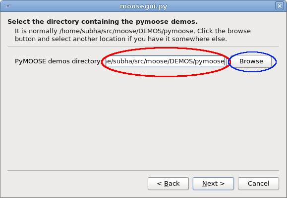
Clicking next will take you to the next page to select the
glclient executable. If this is installed in some location in
your ${PATH} (which is the case for installation from binary
packages), then just glclient in the textbox will do. Otherwise, you
will have to browse and select the executable file. If you compiled
MOOSE from source with the USE_GL=1 option to make, it
will be located in {moose-source}/gl/src/glclient.
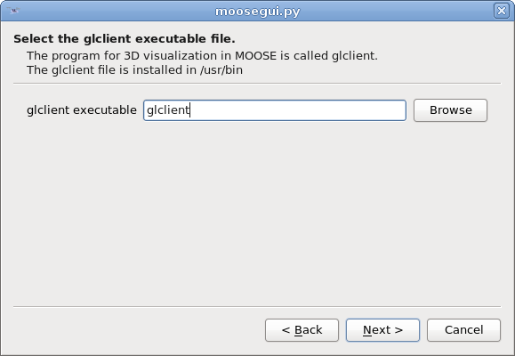
After clicking next you will reach the final page in the wizard. Here
you specify a colormap file for OpenGL-based 3D visualization. Select
any of the files in the colormaps directory (which is
/usr/share/moose1.3/colormaps/ for binary packages and
{moose-source}/gl/colormaps when compiled from source) and
click Finish.
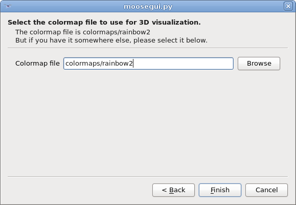
| [ < ] | [ > ] | [ << ] | [ Up ] | [ >> ] | [Top] | [Contents] | [Index] | [ ? ] |
Once you are finished with the First-time Wizard, you will be
working with the moosegui. Even if you cancel the wizard the first
time, you can go back to it and change the settings. It can be accessed
from the File->First time wizard menu.
We discuss the different parts of this window below.
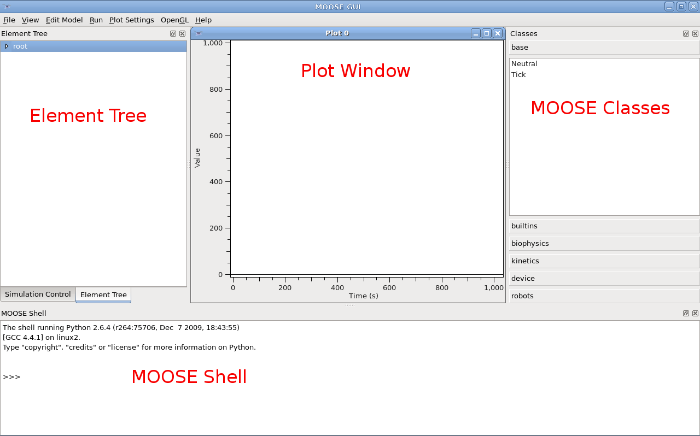
The left-most dock area of the moosegui contains two tabs. The one
titled Element Tree contains the complete tree structure of
the MOOSE elements. The elements(objects) in MOOSE models are part
of a tree structure similar to the folder structure in your PC.
You can click the little arrows to the left of the tree items to expand the tree. When fully expanded, the element tree looks like this:
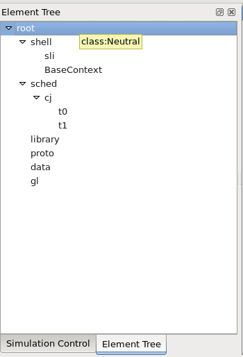
This is the other tab in the left-most dock window.
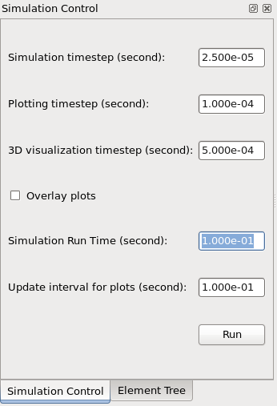
Here you can specify the simulation time step, the time
step used for plotting and the timestep when using the 3D
visualization. The total run time of the simulation and the update
interval for plots is also specified here. When you are ready to
run a model, you can click the Run button here to carry out
the simulation for the specified time.
In the centre of the main moosegui window is the plot window. When
you run a simulation, you can plot the variables of interest in
this area. This will be discussed in connection with the Object
Editor later.
The right dock area contains a list of classes available in MOOSE. They are categorized under different headings.
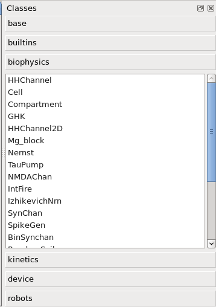
Clicking a heading will expand that category. Below is a short description of the categories:
Basic classes.
Classes for some builtin utility functions.
Classes used in simulation of biophysical entities. It includes compartments for cable models of neurons, ion channels, synaptic channels, etc.
Classes for simulating biochemical entities. Includes molecule pool, reaction, enzyme, etc.
Classes for simulating instrumentation. It includes rc-circuit, pulse-egenrator, differential amplifier, PID controller.
These are special purpose classes used in multiscale models.
If you hover the cursor over any class name in the list, a tool-tip text with a brief documentation of the class will show up.
The MOOSE Shell at the bottom dock area provides an interpreter where you can enter Python or GENESIS commands.
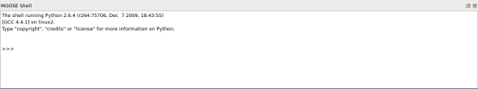
The default interpreter is the Python interpreter. You can switch
to the GENESIS shell by selecting GENESIS from File->MOOSE
Shell Mode from the menu.
| [ < ] | [ > ] | [ << ] | [ Up ] | [ >> ] | [Top] | [Contents] | [Index] | [ ? ] |
You can load an existing model into the GUI from the menu: File->Load Model.
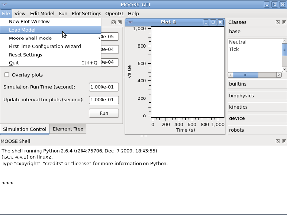
This will pop-up a file browser in which you can select the file you want to load. At the bottom of the file-browser you can select what type of model file you want to load.
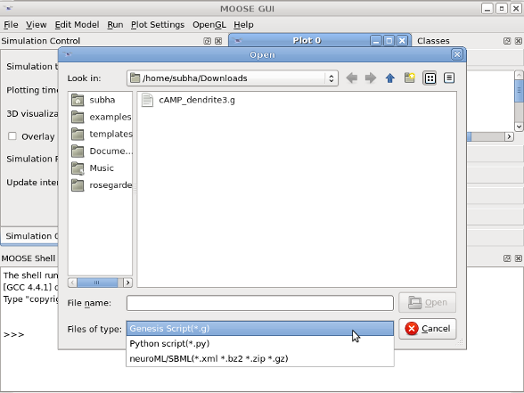
The default is GENESIS script (.g), you can also choose NeuroML or SBML files (extension .xml).
When you load a GENESIS script, it executes whatever is in the script
using the built-in GENESIS-parser. Such a script can do much more than
just loading the model. In particular, if the script contains
reset and step commands, then the simulation will be
executed and you will have to wait until the simulatioin is over to get
control of the moosegui back. You may want to comment out the lines
containing these commands from the .g file before loading in
order to use the Simulation Control to run the simulation with
custom time.
| [ < ] | [ > ] | [ << ] | [ Up ] | [ >> ] | [Top] | [Contents] | [Index] | [ ? ] |
In addition to regular GENESIS scripts, the GUI recognizes .g
files that contain kinetikit models. Kinetikit models have the commands
to plot variables of interest. When you load the model, all these plots
are added to the available plot window. Moreover, you get a graphical
representation of the reaction network in the layout window and the
plots in the Plot window. For example, after I load Kholodenko.g
from DEMOS/kholodenko directory I get the following:
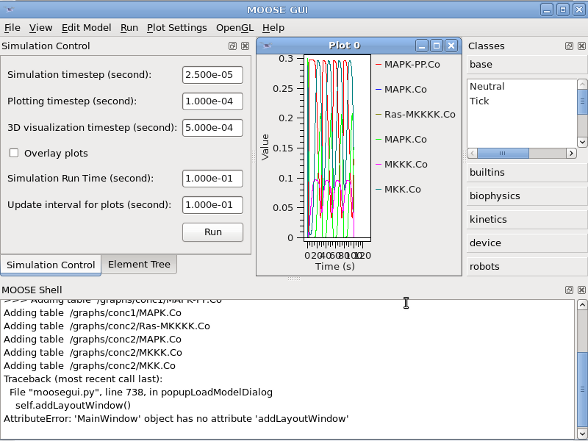
You can double click any item in the layout window and that will open an
editor(Object Editor) for the underlying MOOSE object on the
right hand dock (on top of the Class List) will come up. The more
general way of bringing up the Object Editor is to double click
an item in the Element Tree.
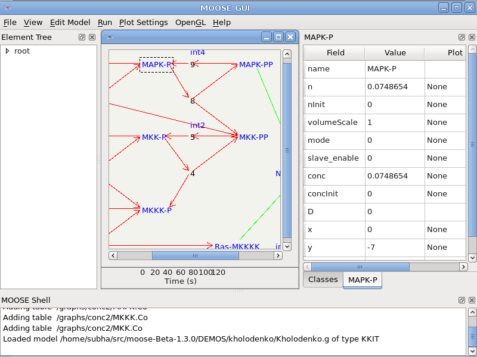
You can modify the properties of the objects (for example the initial concentration of a substrate) in the object editor.
Normally the plot window is under the layout window. You can minimize the windows on top to view the ones below.
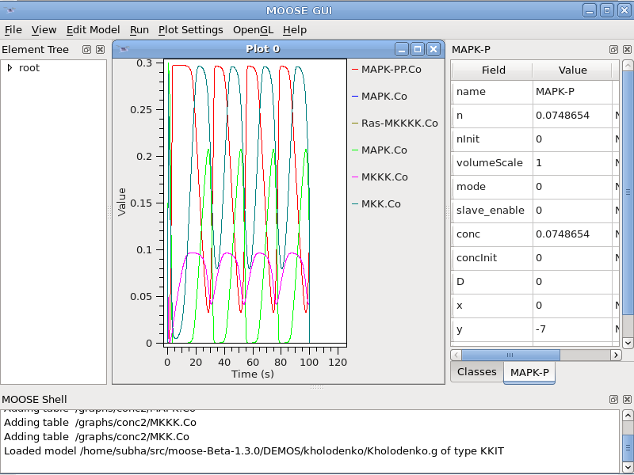
| [ < ] | [ > ] | [ << ] | [ Up ] | [ >> ] | [Top] | [Contents] | [Index] | [ ? ] |
Just like GENESIS models, you can select SBML model in the drop down and load an SBML file. The main difference is that here you don't get the reaction network layout. Also, GENESIS kinetikit files come with predefined plots. But SBML does not handle plotting and visualization.
| [ < ] | [ > ] | [ << ] | [ Up ] | [ >> ] | [Top] | [Contents] | [Index] | [ ? ] |
Currently MOOSE has partial support for NeuroML models. You can load a
model from the “Load File” dialog and selecting NeuroML format from the
file type drop down. The elements in the model are generated as children
of the currently selected element in the Element Tree. So, you can
create the model under a new element by
Neutral element
| 4. Recording and plotting field values over simulation time |
| [ < ] | [ > ] | [ << ] | [ Up ] | [ >> ] | [Top] | [Contents] | [Index] | [ ? ] |
Elements of the Table class are used in MOOSE are used for
recording data. Table is a versatile class: it can serves as (1)
an interpolation table, (2) a function generator (3) a recording table,
depending on what stepmode you set. But in the moosegui you do not
need to create the Table explicitly to record data. You can
simply drag and drop fields in MOOSE elements to a plot window in order
to plot it. The steps are:
Element Tree. This will open the object editor with
list of available fields.
Plot column twice and then selecting 'Plot
0' from the drop down. When you have multiple plot widgets, you can
select where it should be plotted from this drop-down.
| [ < ] | [ > ] | [ << ] | [ Up ] | [ >> ] | [Top] | [Contents] | [Index] | [ ? ] |
| [ < ] | [ > ] | [ << ] | [ Up ] | [ >> ] | [Top] | [Contents] | [Index] | [ ? ] |
Element Tree You can add a new element in a model by using the class list on the
right hand side pane in moosegui see Moose Classes. Double clicking the class name will create a new element in
the Element Tree under the currently selected element and also open
the Object Editor widget for the new element. The element will
have the same name as the class name. It is up to you to rename it to
something more appropriate. To do so edit the name field in the
Object Editor.
| [ < ] | [ > ] | [ << ] | [ Up ] | [ >> ] | [Top] | [Contents] | [Index] | [ ? ] |
Just creating an element may not be sufficient for any complex model. You need to enable this model to talk to other elements during a simulation. This is done via messages. To do this,
Edit Model in the menu bar and select Connect
Elements.
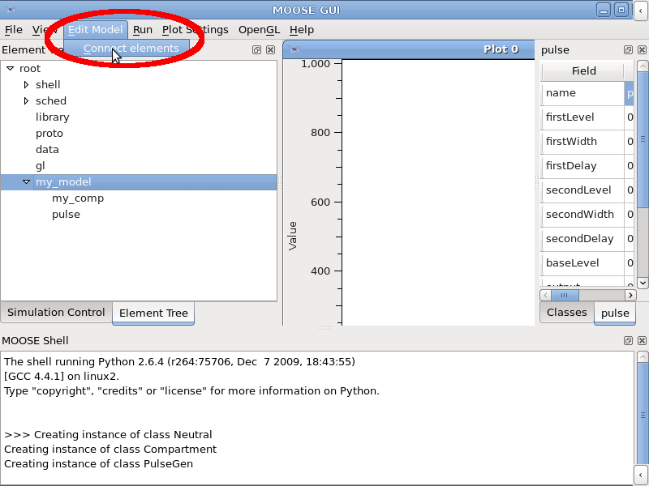
This will pop up a window with two panes. The left pane is for selecting the source of the message, the right for the destination of the message. Both has a model tree and drop-down menu for the message field.
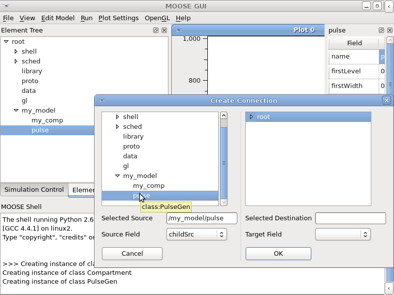
Element Tree and select the element
which will be the source of the message. Once you select the element,
the drop-down menu labeled Source Field will be populated. You
have to select the appropriate source field here.
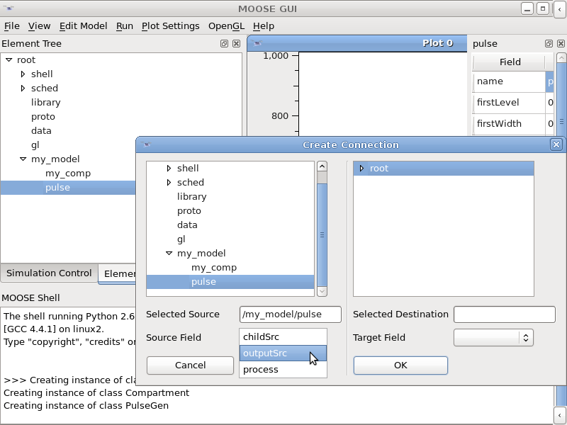
| [ < ] | [ > ] | [ << ] | [ Up ] | [ >> ] | [Top] | [Contents] | [Index] | [ ? ] |
The documentation for MOOSE is work under progress. You can get some
contextual information in the tool tip text (popped up by hovering the
mouse cursor above a class in Class List or a field in
Object Editor.
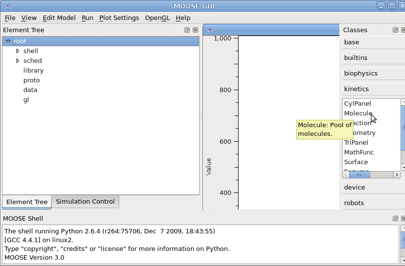
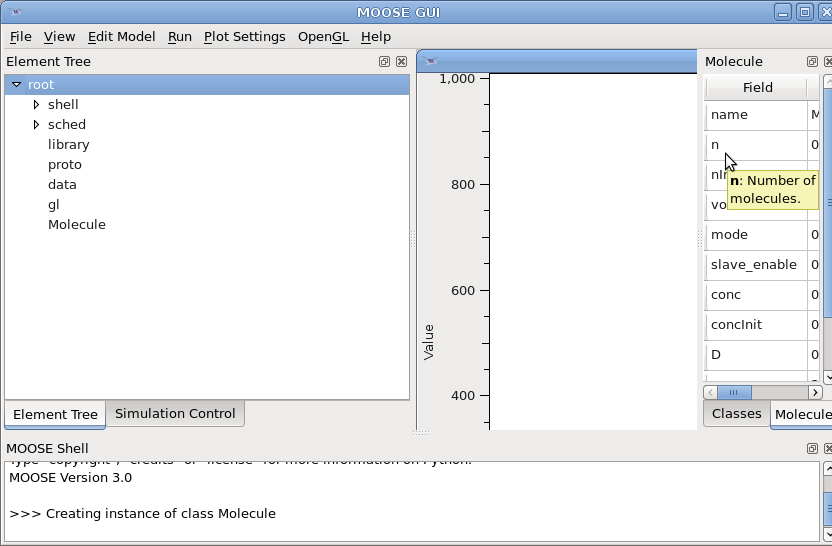
Moreover you can get detailed documentation on a
class by calling moose.doc() function on the class in the MOOSE
Shell.
print moose.doc(moose.HHChannel)
print moose.doc('HHChannel.channel')
|
Note that the documentation is formatted with special characters for
printing in a terminal. Thus you have to call print on the
returned string.
| [Top] | [Contents] | [Index] | [ ? ] |
| [Top] | [Contents] | [Index] | [ ? ] |
This document was generated by Subhasis Ray on November, 3 2010 using texi2html 1.78.
The buttons in the navigation panels have the following meaning:
| Button | Name | Go to | From 1.2.3 go to |
|---|---|---|---|
| [ < ] | Back | Previous section in reading order | 1.2.2 |
| [ > ] | Forward | Next section in reading order | 1.2.4 |
| [ << ] | FastBack | Beginning of this chapter or previous chapter | 1 |
| [ Up ] | Up | Up section | 1.2 |
| [ >> ] | FastForward | Next chapter | 2 |
| [Top] | Top | Cover (top) of document | |
| [Contents] | Contents | Table of contents | |
| [Index] | Index | Index | |
| [ ? ] | About | About (help) |
where the Example assumes that the current position is at Subsubsection One-Two-Three of a document of the following structure:
This document was generated by Subhasis Ray on November, 3 2010 using texi2html 1.78.